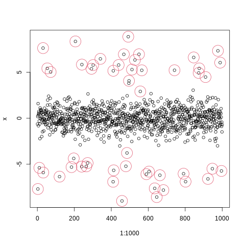
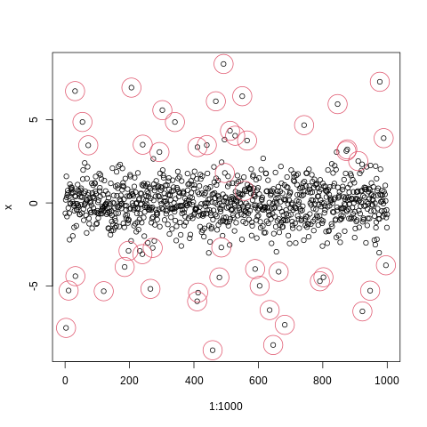
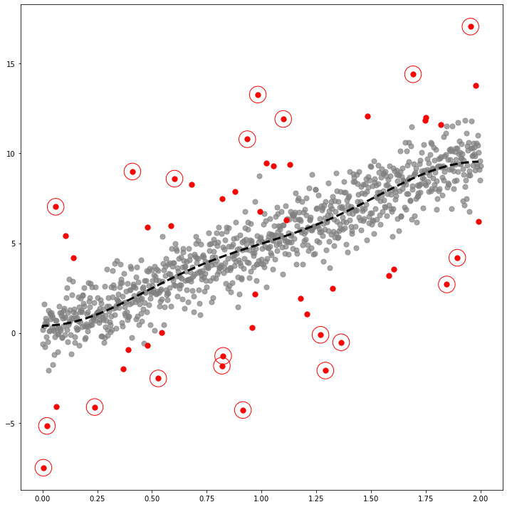
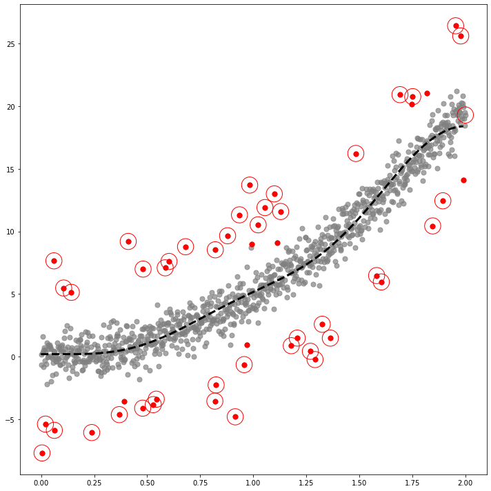
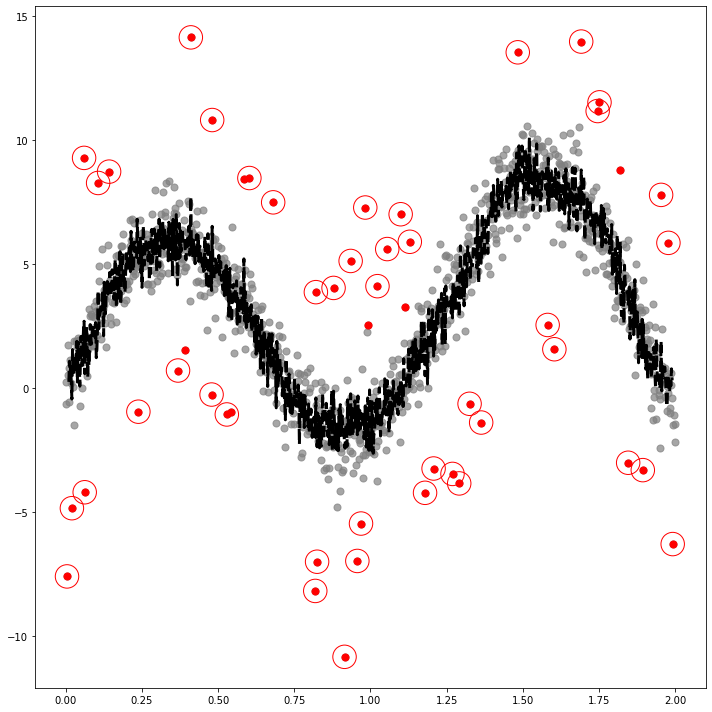
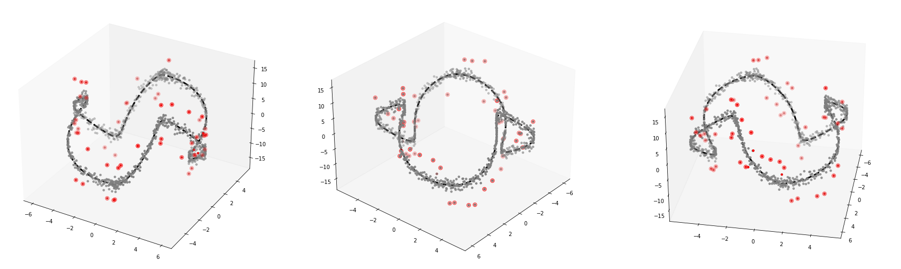

import tqdm
import numpy as np
import pandas as pd
import matplotlib.pyplot as plt
import plotly.express as px
import warnings
warnings.simplefilter("ignore", np.ComplexWarning)
from haversine import haversine
from IPython.display import HTMLPoster
from matplotlib import cm
from pygsp import graphs, filters, plotting, utils
import plotly.graph_objects as go
import rpy2
import rpy2.robjects as ro
from rpy2.robjects.vectors import FloatVector
from rpy2.robjects.packages import importrimport warnings
warnings.filterwarnings("ignore")%load_ext rpy2.ipythonThe rpy2.ipython extension is already loaded. To reload it, use:
%reload_ext rpy2.ipython%%R
set.seed(1)
epsilon = rnorm(1000)
signal = sample(c(runif(25,-7,-5), runif(25,5,7), rep(0,950)))
index_of_trueoutlier = which(signal!=0)
index_of_trueoutlier_bool = signal!=0
x=signal+epsilon
plot(1:1000,x)
points(index_of_trueoutlier,x[index_of_trueoutlier],col=2,cex=4)
%%R
set.seed(1)
epsilon = rnorm(1000)
signal = sample(c(runif(25,-7,-2.5), runif(25,2.5,7), rep(0,950)))
index_of_trueoutlier = which(signal!=0)
index_of_trueoutlier_bool = signal!=0
x=signal+epsilon
plot(1:1000,x)
points(index_of_trueoutlier,x[index_of_trueoutlier],col=2,cex=4)
%R -o x
%R -o index_of_trueoutlier
%R -o index_of_trueoutlier_bool
%R -o signalindex_of_trueoutlier_bool=np.array(index_of_trueoutlier_bool,dtype=np.bool8)ebayesthresh = importr('EbayesThresh').ebayesthreshxhat = np.array(ebayesthresh(FloatVector(x)))Linear(1)
_x = np.linspace(0,2,1000)
_y1 = 5*_x
_y = _y1 + x # x is epsilondf1=pd.DataFrame({'x':_x, 'y':_y, 'y1':_y1})w=np.zeros((1000,1000))for i in range(1000):
for j in range(1000):
if i==j :
w[i,j] = 0
elif np.abs(i-j) <= 1 :
w[i,j] = 1class SIMUL:
def __init__(self,df):
self.df = df
self.y = df.y.to_numpy()
self.y1 = df.y1.to_numpy()
self.x = df.x.to_numpy()
self.n = len(self.y)
self.W = w
def _eigen(self):
d= self.W.sum(axis=1)
D= np.diag(d)
self.L = np.diag(1/np.sqrt(d)) @ (D-self.W) @ np.diag(1/np.sqrt(d))
self.lamb, self.Psi = np.linalg.eigh(self.L)
self.Lamb = np.diag(self.lamb)
def fit(self,sd=5,ref=30,ymin=-5,ymax=20,cuts=0,cutf=995): # fit with ebayesthresh
self._eigen()
self.ybar = self.Psi.T @ self.y # fbar := graph fourier transform of f
self.power = self.ybar**2
ebayesthresh = importr('EbayesThresh').ebayesthresh
self.power_threshed=np.array(ebayesthresh(FloatVector(self.ybar**2),sd=sd))
self.ybar_threshed = np.where(self.power_threshed>0,self.ybar,0)
self.yhat = self.Psi@self.ybar_threshed
self.df = self.df.assign(yHat = self.yhat)
self.df = self.df.assign(Residual = self.df.y- self.df.yHat)
self.differ=(np.abs(self.y-self.yhat)-np.min(np.abs(self.y-self.yhat)))/(np.max(np.abs(self.y-self.yhat))-np.min(np.abs(self.y-self.yhat))) #color 표현은 위핸 표준화
self.df = self.df.assign(differ = self.differ)
fig,ax = plt.subplots(figsize=(10,10))
ax.scatter(self.x,self.y,color='gray',s=50,alpha=0.7)
ax.scatter(self.x[index_of_trueoutlier_bool],self.y[index_of_trueoutlier_bool],color='red',s=50)
ax.plot(self.x[cuts:cutf],self.yhat[cuts:cutf], '--k',lw=3)
ax.scatter(self.df.query('Residual**2>@ref')['x'],self.df.query('Residual**2>@ref')['y'],color='red',s=550,facecolors='none', edgecolors='r')
fig.tight_layout()
fig.savefig('fig1.eps',format='eps')_simul = SIMUL(df1)_simul.fit(sd=20,ref=25,ymin=-10,ymax=15)The PostScript backend does not support transparency; partially transparent artists will be rendered opaque.
Linear(2)
_x = np.linspace(0,2,1000)
_y1 = 5*_x**2
_y = _y1 + x # x is epsilondf2=pd.DataFrame({'x':_x, 'y':_y, 'y1':_y1})_simul2 = SIMUL(df2)_simul2.fit(sd=20,ref=20,ymin=-10,ymax=15)The PostScript backend does not support transparency; partially transparent artists will be rendered opaque.
COS
_x = np.linspace(0,2,1000)
_y1 = -2+ 3*np.cos(_x) + 1*np.cos(2*_x) + 5*np.cos(5*_x)
_y = _y1 + xdf4=pd.DataFrame({'x':_x, 'y':_y, 'y1':_y1})_simul4 = SIMUL(df4)_simul4.fit(sd=20,ref=20,ymin=-10,ymax=15)The PostScript backend does not support transparency; partially transparent artists will be rendered opaque.
SIN
_x = np.linspace(0,2,1000)
_y1 = 3*np.sin(_x) + 1*np.sin(_x**2) + 5*np.sin(5*_x)
_y = _y1 + x # x is epsilondf5=pd.DataFrame({'x':_x, 'y':_y, 'y1':_y1})_simul5 = SIMUL(df5)_simul5.fit(ref=15,ymin=-10,ymax=15,cuts=5)The PostScript backend does not support transparency; partially transparent artists will be rendered opaque.
1D manifold
np.random.seed(777)
pi=np.pi
n=1000
ang=np.linspace(-pi,pi-2*pi/n,n)
r=5+np.cos(np.linspace(0,12*pi,n))
vx=r*np.cos(ang)
vy=r*np.sin(ang)
f1=10*np.sin(np.linspace(0,6*pi,n))
f = f1 + xdf = pd.DataFrame({'x' : vx, 'y' : vy, 'f' : f, 'f1' : f1})class SIMUL:
def __init__(self,df):
self.df = df
self.f = df.f.to_numpy()
self.f1 = df.f1.to_numpy()
self.x = df.x.to_numpy()
self.y = df.y.to_numpy()
self.n = len(self.f)
self.theta= None
def get_distance(self):
self.D = np.zeros([self.n,self.n])
locations = np.stack([self.x, self.y],axis=1)
for i in tqdm.tqdm(range(self.n)):
for j in range(i,self.n):
self.D[i,j]=np.linalg.norm(locations[i]-locations[j])
self.D = self.D + self.D.T
def get_weightmatrix(self,theta=1,beta=0.5,kappa=4000):
self.theta = theta
dist = np.where(self.D < kappa,self.D,0)
self.W = np.exp(-(dist/self.theta)**2)
def _eigen(self):
d= self.W.sum(axis=1)
D= np.diag(d)
self.L = np.diag(1/np.sqrt(d)) @ (D-self.W) @ np.diag(1/np.sqrt(d))
self.lamb, self.Psi = np.linalg.eigh(self.L)
self.Lamb = np.diag(self.lamb)
def fit(self,sd=5,ref=60): # fit with ebayesthresh
self._eigen()
self.fbar = self.Psi.T @ self.f # fbar := graph fourier transform of f
self.power = self.fbar**2
ebayesthresh = importr('EbayesThresh').ebayesthresh
self.power_threshed=np.array(ebayesthresh(FloatVector(self.fbar**2),sd=sd))
self.fbar_threshed = np.where(self.power_threshed>0,self.fbar,0)
self.fhat = self.Psi@self.fbar_threshed
self.df = self.df.assign(fHat = self.fhat)
self.df = self.df.assign(Residual = self.df.f- self.df.fHat)
self.dif=(np.abs(self.f-self.fhat)-np.min(np.abs(self.f-self.fhat)))/(np.max(np.abs(self.f-self.fhat))-np.min(np.abs(self.f-self.fhat)))
self.df = self.df.assign(dif = self.dif)
self.bottom = np.zeros_like(self.f)
self.width=0.05
self.depth=0.05
# fig = plt.figure(figsize=(10,10))
# ax = fig.add_subplot(1,1,1, projection='3d')
#
fig, (ax1,ax2,ax3) = plt.subplots(1,3,figsize=(30,15),subplot_kw={"projection":"3d"})
ax1.grid(False)
ax1.scatter3D(self.x,self.y,self.f,zdir='z',s=50,marker='.',color='gray')
ax1.scatter3D(self.x[index_of_trueoutlier_bool],self.y[index_of_trueoutlier_bool],self.f[index_of_trueoutlier_bool],zdir='z',s=50,marker='.',color='red')
ax1.scatter3D(self.df.query('Residual**2>@ref')['x'],self.df.query('Residual**2>@ref')['y'],self.df.query('Residual**2>@ref')['f'],edgecolors='red',zdir='z',s=50,facecolors='none')
ax1.plot3D(self.x,self.y,self.f1,'--k',lw=3)
ax2.view_init(elev=30., azim=60)
ax2.grid(False)
ax2.scatter3D(self.x,self.y,self.f,zdir='z',s=50,marker='.',color='gray')
ax2.scatter3D(self.x[index_of_trueoutlier_bool],self.y[index_of_trueoutlier_bool],self.f[index_of_trueoutlier_bool],zdir='z',s=50,marker='.',color='red')
ax2.scatter3D(self.df.query('Residual**2>@ref')['x'],self.df.query('Residual**2>@ref')['y'],self.df.query('Residual**2>@ref')['f'],edgecolors='red',zdir='z',s=50,facecolors='none')
ax2.plot3D(self.x,self.y,self.f1,'--k',lw=3)
ax2.view_init(elev=30., azim=40)
ax3.grid(False)
ax3.scatter3D(self.x,self.y,self.f,zdir='z',s=50,marker='.',color='gray')
ax3.scatter3D(self.x[index_of_trueoutlier_bool],self.y[index_of_trueoutlier_bool],self.f[index_of_trueoutlier_bool],zdir='z',s=50,marker='.',color='red')
ax3.scatter3D(self.df.query('Residual**2>@ref')['x'],self.df.query('Residual**2>@ref')['y'],self.df.query('Residual**2>@ref')['f'],edgecolors='red',zdir='z',s=50,facecolors='none')
ax3.plot3D(self.x,self.y,self.f1,'--k',lw=3)
ax3.view_init(elev=30., azim=10)
fig.savefig('fig2.eps',format='eps')_simul3d = SIMUL(df)_simul3d.get_distance()100%|██████████| 1000/1000 [00:01<00:00, 562.21it/s]_simul3d.get_weightmatrix(theta=(_simul3d.D[_simul3d.D>0].mean()),kappa=2500) (_simul3d.D[_simul3d.D>0].mean())6.453496488349201%%capture --no-display
_simul3d.fit(sd=15,ref=20)
Bunny
G = graphs.Bunny()
n = G.Ng = filters.Heat(G, tau=75) # 꼬리부분의 빨간신호를 퍼지게하는 정도normal = np.random.randn(n)
unif = np.concatenate([np.random.uniform(low=3,high=7,size=60), np.random.uniform(low=-7,high=-3,size=60),np.zeros(n-120)]); np.random.shuffle(unif)
noise = normal + unifindex_of_trueoutlier_bool = (unif!=0)f = np.zeros(n)
f[1000] = -3234
f = g.filter(f, method='chebyshev') 2022-11-10 21:12:29,879:[WARNING](pygsp.graphs.graph.lmax): The largest eigenvalue G.lmax is not available, we need to estimate it. Explicitly call G.estimate_lmax() or G.compute_fourier_basis() once beforehand to suppress the warning.W = G.W.toarray()
x = G.coords[:,0]
y = G.coords[:,1]
z = -G.coords[:,2]df = pd.DataFrame({'x' : x, 'y' : y, 'z' : z, 'f' : f, 'noise' : noise})class SIMUL:
def __init__(self,df):
self.df = df
self.f = df.f.to_numpy()
self.z = df.z.to_numpy()
self.x = df.x.to_numpy()
self.y = df.y.to_numpy()
self.noise = df.noise.to_numpy()
self.fnoise = self.f + self.noise
self.W = W
self.n = len(self.f)
self.theta= None
def _eigen(self):
d= self.W.sum(axis=1)
D= np.diag(d)
self.L = np.diag(1/np.sqrt(d)) @ (D-self.W) @ np.diag(1/np.sqrt(d))
self.lamb, self.Psi = np.linalg.eigh(self.L)
self.Lamb = np.diag(self.lamb)
def fit(self,sd=2.5,ref=6): # fit with ebayesthresh
self._eigen()
self.fbar = self.Psi.T @ self.fnoise # fbar := graph fourier transform of f
self.power = self.fbar**2
ebayesthresh = importr('EbayesThresh').ebayesthresh
self.power_threshed=np.array(ebayesthresh(FloatVector(self.fbar**2),sd=sd))
self.fbar_threshed = np.where(self.power_threshed>0,self.fbar,0)
self.fhat = self.Psi@self.fbar_threshed
self.df = self.df.assign(fnoise = self.fnoise)
self.df = self.df.assign(fHat = self.fhat)
self.df = self.df.assign(Residual = self.df.f + self.df.noise - self.df.fHat)
self.bottom = np.zeros_like(self.f)
self.width=0.05
self.depth=0.05
fig = plt.figure(figsize=(30,12),dpi=400)
ax1 = fig.add_subplot(251, projection='3d')
ax1.grid(False)
ax1.scatter3D(self.x,self.y,self.z,c='gray',zdir='z',alpha=0.5,marker='.')
ax1.view_init(elev=60., azim=-90)
ax2= fig.add_subplot(252, projection='3d')
ax2.grid(False)
ax2.scatter3D(self.x,self.y,self.z,c=self.f,cmap='hsv',zdir='z',marker='.',alpha=0.5,vmin=-12,vmax=10)
ax2.view_init(elev=60., azim=-90)
ax3= fig.add_subplot(253, projection='3d')
ax3.grid(False)
ax3.scatter3D(self.x,self.y,self.z,c=self.fnoise,cmap='hsv',zdir='z',marker='.',alpha=0.5,vmin=-12,vmax=10)
ax3.view_init(elev=60., azim=-90)
ax4= fig.add_subplot(254, projection='3d')
ax4.grid(False)
ax4.scatter3D(self.x,self.y,self.z,c=self.fnoise,cmap='hsv',zdir='z',marker='.',vmin=-12,vmax=10,s=1)
ax4.scatter3D(self.x[index_of_trueoutlier_bool],self.y[index_of_trueoutlier_bool],self.z[index_of_trueoutlier_bool],c=self.fnoise[index_of_trueoutlier_bool],cmap='hsv',zdir='z',marker='.',s=50)
ax4.view_init(elev=60., azim=-90)
ax5= fig.add_subplot(255, projection='3d')
ax5.grid(False)
ax5.scatter3D(self.x,self.y,self.z,c=self.fnoise,cmap='hsv',zdir='z',marker='.',vmin=-12,vmax=10,s=1)
ax5.scatter3D(self.x[index_of_trueoutlier_bool],self.y[index_of_trueoutlier_bool],self.z[index_of_trueoutlier_bool],c=self.fnoise[index_of_trueoutlier_bool],cmap='hsv',zdir='z',marker='.',s=50)
ax5.scatter3D(self.df.query('Residual**2>@ref')['x'],self.df.query('Residual**2>@ref')['y'],self.df.query('Residual**2>@ref')['z'],zdir='z',s=550,marker='.',edgecolors='red',facecolors='none')
ax5.view_init(elev=60., azim=-90)
ax6 = fig.add_subplot(256, projection='3d')
ax6.grid(False)
ax6.scatter3D(self.x,self.y,self.z,c='gray',zdir='z',alpha=0.5,marker='.')
ax6.view_init(elev=-60., azim=-90)
ax7= fig.add_subplot(257, projection='3d')
ax7.grid(False)
ax7.scatter3D(self.x,self.y,self.z,c=self.f,cmap='hsv',zdir='z',marker='.',alpha=0.5,vmin=-12,vmax=10)
ax7.view_init(elev=-60., azim=-90)
ax8= fig.add_subplot(258, projection='3d')
ax8.grid(False)
ax8.scatter3D(self.x,self.y,self.z,c=self.fnoise,cmap='hsv',zdir='z',marker='.',alpha=0.5,vmin=-12,vmax=10)
ax8.view_init(elev=-60., azim=-90)
ax9= fig.add_subplot(259, projection='3d')
ax9.grid(False)
ax9.scatter3D(self.x,self.y,self.z,c=self.fnoise,cmap='hsv',zdir='z',marker='.',vmin=-12,vmax=10,s=1)
ax9.scatter3D(self.x[index_of_trueoutlier_bool],self.y[index_of_trueoutlier_bool],self.z[index_of_trueoutlier_bool],c=self.fnoise[index_of_trueoutlier_bool],cmap='hsv',zdir='z',marker='.',s=50)
ax9.view_init(elev=-60., azim=-90)
ax10= fig.add_subplot(2,5,10, projection='3d')
ax10.grid(False)
ax10.scatter3D(self.x,self.y,self.z,c=self.fnoise,cmap='hsv',zdir='z',marker='.',vmin=-12,vmax=10,s=1)
ax10.scatter3D(self.x[index_of_trueoutlier_bool],self.y[index_of_trueoutlier_bool],self.z[index_of_trueoutlier_bool],c=self.fnoise[index_of_trueoutlier_bool],cmap='hsv',zdir='z',marker='.',s=50)
ax10.scatter3D(self.df.query('Residual**2>@ref')['x'],self.df.query('Residual**2>@ref')['y'],self.df.query('Residual**2>@ref')['z'],zdir='z',s=550,marker='.',edgecolors='red',facecolors='none')
ax10.view_init(elev=-60., azim=-90)
fig.savefig('fig_bunny.eps',format='eps')_simul = SIMUL(df)max(_simul.f),max(_simul.fnoise)(-0.010827167666814895, 8.453057038638512)min(_simul.f),min(_simul.fnoise)(-4.74620052476489, -11.196627043702925)%%capture --no-display
_simul.fit(sd=20,ref=10)
Earthquake
df= pd.read_csv('https://raw.githubusercontent.com/plotly/datasets/master/earthquakes-23k.csv')df_global= pd.concat([pd.read_csv('00_05.csv'),pd.read_csv('05_10.csv'),pd.read_csv('10_15.csv'),pd.read_csv('15_20.csv')]).iloc[:,[0,1,2,4]].rename(columns={'latitude':'Latitude','longitude':'Longitude','mag':'Magnitude'}).reset_index().iloc[:,1:]df_global = df_global.assign(Year=list(map(lambda x: x.split('-')[0], df_global.time))).iloc[:,1:]df_global.Year = df_global.Year.astype(np.float64)class MooYaHo:
def __init__(self,df):
self.df = df
self.f = df.Magnitude.to_numpy()
self.year = df.Year.to_numpy()
self.lat = df.Latitude.to_numpy()
self.long = df.Longitude.to_numpy()
self.n = len(self.f)
self.theta= None
def get_distance(self):
self.D = np.zeros([self.n,self.n])
locations = np.stack([self.lat, self.long],axis=1)
for i in tqdm.tqdm(range(self.n)):
for j in range(i,self.n):
self.D[i,j]=haversine(locations[i],locations[j])
self.D = self.D+self.D.T
def get_weightmatrix(self,theta=1,beta=0.5,kappa=4000):
self.theta = theta
dist = np.where(self.D<kappa,self.D,0)
self.W = np.exp(-(dist/self.theta)**2)
def _eigen(self):
d= self.W.sum(axis=1)
D= np.diag(d)
self.L = np.diag(1/np.sqrt(d)) @ (D-self.W) @ np.diag(1/np.sqrt(d))
self.lamb, self.Psi = np.linalg.eigh(self.L)
self.Lamb = np.diag(self.lamb)
def fit(self,m):
self._eigen()
self.fhat = self.Psi[:,0:m]@self.Psi[:,0:m].T@self.f
self.df = self.df.assign(MagnitudeHat = self.fhat)
self.df = self.df.assign(Residual = self.df.Magnitude- self.df.MagnitudeHat)
plt.plot(self.f,'.')
plt.plot(self.fhat,'x')class MooYaHo2(MooYaHo): # ebayesthresh 기능추가
def fit2(self,ref=0.5): # fit with ebayesthresh
self._eigen()
self.fbar = self.Psi.T @ self.f # fbar := graph fourier transform of f
self.power = self.fbar**2
ebayesthresh = importr('EbayesThresh').ebayesthresh
self.power_threshed=np.array(ebayesthresh(FloatVector(self.fbar**2)))
self.fbar_threshed = np.where(self.power_threshed>0,self.fbar,0)
self.fhat = self.Psi@self.fbar_threshed
self.df = self.df.assign(MagnitudeHat = self.fhat)
self.df = self.df.assign(Residual = self.df.Magnitude- self.df.MagnitudeHat)
self.con = np.where(self.df.Residual>0.7,1,0)class eachlocation(MooYaHo2):
def haiti(self,MagThresh=7,ResThresh=1,adjzoom=5,adjmarkersize = 40):
fig = px.density_mapbox(self.df,
lat='Latitude',
lon='Longitude',
z='Magnitude',
radius=15,
center=dict(lat=18.4430, lon=-72.5710),
zoom= adjzoom,
height=900,
opacity = 0.8,
mapbox_style="stamen-terrain",
range_color=[-3,3])
fig.update_layout(margin={"r":0,"t":0,"l":0,"b":0})
fig.add_scattermapbox(lat = self.df.query('Magnitude > @MagThresh')['Latitude'],
lon = self.df.query('Magnitude > @MagThresh')['Longitude'],
text = self.df.query('Magnitude > @MagThresh')['Magnitude'],
marker_size= 5,
marker_color= 'blue',
opacity = 0.1
)
fig.add_scattermapbox(lat = self.df.query('Residual**2 > @ResThresh')['Latitude'],
lon = self.df.query('Residual**2 > @ResThresh')['Longitude'],
text = self.df.query('Magnitude > @ResThresh')['Magnitude'],
marker_size= adjmarkersize,
marker_color= 'red',
opacity = 0.8
)
fig.add_trace(go.Scattermapbox(
lat=self.df.query('Residual**2 > @ResThresh')['Latitude'],
lon=self.df.query('Residual**2 > @ResThresh')['Longitude'],
mode='markers',
marker=go.scattermapbox.Marker(
size=20,
color='rgb(255, 255, 255)',
opacity=0.4
)
))
return fig
def lquique(self,MagThresh=7,ResThresh=1,adjzoom=5, adjmarkersize= 40):
fig = px.density_mapbox(self.df,
lat='Latitude',
lon='Longitude',
z='Magnitude',
radius=15,
center=dict(lat=-32.6953, lon=-71.4416),
zoom=adjzoom,
height=900,
opacity = 0.8,
mapbox_style="stamen-terrain",
range_color=[-7,7])
fig.update_layout(margin={"r":0,"t":0,"l":0,"b":0})
fig.add_scattermapbox(lat = self.df.query('Magnitude > @MagThresh')['Latitude'],
lon = self.df.query('Magnitude > @MagThresh')['Longitude'],
text = self.df.query('Magnitude > @MagThresh')['Magnitude'],
marker_size= 5,
marker_color= 'blue',
opacity = 0.1
)
fig.add_scattermapbox(lat = self.df.query('Residual**2 > @ResThresh')['Latitude'],
lon = self.df.query('Residual**2 > @ResThresh')['Longitude'],
text = self.df.query('Magnitude > @ResThresh')['Magnitude'],
marker_size= adjmarkersize,
marker_color= 'red',
opacity = 0.8
)
fig.add_trace(go.Scattermapbox(
lat=self.df.query('Residual**2 > @ResThresh')['Latitude'],
lon=self.df.query('Residual**2 > @ResThresh')['Longitude'],
mode='markers',
marker=go.scattermapbox.Marker(
size=20,
color='rgb(255, 255, 255)',
opacity=0.8
)
))
return fig
def sichuan(self,MagThresh=7,ResThresh=1,adjzoom=5,adjmarkersize=40):
fig = px.density_mapbox(self.df,
lat='Latitude',
lon='Longitude',
z='Magnitude',
radius=15,
center=dict(lat=30.3080, lon=102.8880),
zoom=adjzoom,
height=900,
opacity = 0.6,
mapbox_style="stamen-terrain",
range_color=[-7,7])
fig.update_layout(margin={"r":0,"t":0,"l":0,"b":0})
fig.add_scattermapbox(lat = self.df.query('Magnitude > @MagThresh')['Latitude'],
lon = self.df.query('Magnitude > @MagThresh')['Longitude'],
text = self.df.query('Magnitude > @MagThresh')['Magnitude'],
marker_size= 5,
marker_color= 'blue',
opacity = 0.1
)
fig.add_scattermapbox(lat = self.df.query('Residual**2 > @ResThresh')['Latitude'],
lon = self.df.query('Residual**2 > @ResThresh')['Longitude'],
text = self.df.query('Magnitude > @ResThresh')['Magnitude'],
marker_size= adjmarkersize,
marker_color= 'red',
opacity = 0.8
)
fig.add_trace(go.Scattermapbox(
lat=self.df.query('Residual**2 > @ResThresh')['Latitude'],
lon=self.df.query('Residual**2 > @ResThresh')['Longitude'],
mode='markers',
marker=go.scattermapbox.Marker(
size=20,
color='rgb(255, 255, 255)',
opacity=0.8
)
))
return fig each_location=eachlocation(df_global.query("2010 <= Year < 2015"))- get distance
each_location.get_distance()100%|██████████| 12498/12498 [03:24<00:00, 61.15it/s] each_location.D[each_location.D>0].mean()8810.865423093777plt.hist(each_location.D[each_location.D>0])(array([14176290., 16005894., 21186674., 22331128., 19394182., 17548252.,
16668048., 13316436., 12973260., 2582550.]),
array([8.97930163e-02, 2.00141141e+03, 4.00273303e+03, 6.00405465e+03,
8.00537626e+03, 1.00066979e+04, 1.20080195e+04, 1.40093411e+04,
1.60106627e+04, 1.80119844e+04, 2.00133060e+04]),
<BarContainer object of 10 artists>)
- weight matrix
each_location.get_weightmatrix(theta=(8810.865423093777),kappa=2500) - fit
each_location.fit2()each_location.haiti(MagThresh=6.9,ResThresh=0.5,adjzoom=5,adjmarkersize=40)
fig = each_location.haiti(MagThresh=6.9,ResThresh=0.5,adjzoom=5,adjmarkersize=40)
fig.write_image('fig_haiti.png',scale=3)each_location.lquique(MagThresh=6.4,ResThresh=0.4,adjzoom=5,adjmarkersize=40)
# fig = each_location.lquique(MagThresh=6.4,ResThresh=0.4,adjzoom=5,adjmarkersize=20)
# fig.write_image('fig_lquique.svg',scale=3)each_location.sichuan(MagThresh=6.5,ResThresh=0.4,adjzoom=5,adjmarkersize=40)
# fig = each_location.sichuan(MagThresh=6.5,ResThresh=0.4,adjzoom=5,adjmarkersize=20)
# fig.write_image('fig_sichuan.svg',scale=3)